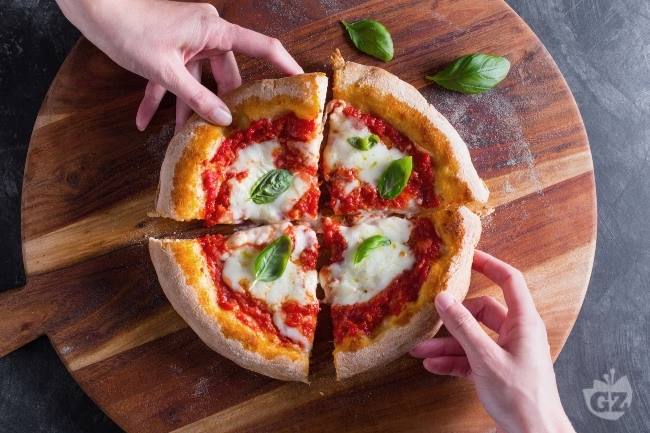

Pizza Margherita Recipe

Description
Naples is a thousand shades – of pizza! But, if you ask around, they’ll tell you that there’s just one original, the Margherita pizza, and that tomato, mozzarella, and basil are the only
toppings there are. Every self-respecting pizza chef, or pizzaiolo, has their own recipe that they guard jealously, but we’d like to share the one that we’ve come up with. By following our
instructions step by step, your homemade Margherita pizza will be just as good as one from a pizzeria! There are just a few secrets that you’ll soon discover: First of all, the ingredients
must all be of the highest quality, the oven must be red-hot, and last, but not least, you must put all your love for cooking into the dough – it’s the only way to make the pizza really special!
Ingredients
- Manitoba flour 1 ½ cup (200 g)
- Water 1 ⅓ cup (300 ml) - at room temperature
- Fresh brewer's yeast 1 ¼ tsp (4 g)
- Flour 00 2 ⅔ cups (300 g)
- Fine salt 1 ½ tsp (10 g)
- Tomato puree 1 ¼ cup (300 g)
- Basil to taste
- Mozzarella cheese 0.5 lb (200 g)
- Extra virgin olive oil to taste
- Remilled durum wheat semolina to taste
Steps
- To make the pizza dough, we’ve chosen to knead by hand, but if you prefer to use a mixer or kneading machine, you can follow the same steps, using the dough hook at low medium speed. First of all, pour the two flours into a bowl, crumble the yeast into it, and pour in the water a little at a time. The ideal water temperature is 77°F (25°C).
- As you pour the water in, stir slowly using a wooden spoon, and once you’ve added nearly all the water, add the salt as well. Continue adding the water and begin to knead with your hands to combine the ingredients well.
- Finally, transfer the dough to a work surface and work it with your hands until it is smooth and even. At this point, leave it to rest on the work surface for around 10 minutes, covering it with a bowl. Once rested, give it a little fold: Imagine that the ball of dough is divided into 4 parts; take the end of each part, pull it out delicately, and fold it in toward the center.
- After making the 4 folds, shape the dough into a ball again by turning it over on itself. Transfer the ball of dough into a bowl, cover with plastic wrap, and leave it to rise. For your convenience, you can place the bowl in an oven that’s turned off but with the light on; that way, the inside will reach a temperature of 79-82°F (26-28°C), which is ideal for leavening. Otherwise, you can put the bowl in a warm place. The leavening times are approximate because the dough itself, temperature, and weather conditions all have an influence on the leavening: On average, it should take 6 hours for the dough to double its volume.
- After this leavening time has passed, the dough will be nice and puffed up, so transfer it to the work surface and divide it into three 9½-oz (365-g) pieces using a dough cutter. If needed, you can lightly flour the work surface. Next, take each portion of dough and lift up one end of it and bring it toward the center, like you did before in step 9. Repeat this process for the other 3 ends of the dough.
- Turn the dough over and carry on with the rounding: Rounding the dough means turning it around with your hands on the work surface, bringing it toward you and then moving it away repeatedly until you get a smooth, even ball. As you form these little balls, transfer them to a greased pizza dough container and cover with the lid.
- Let the balls of dough rise for another 30 minutes. In the meantime, place the pizza stone in the upper part of the oven. Turn the oven on and heat to 480°F (250°C) in conventional mode. Now, using a dough cutter, carefully lift the first ball out of the dough container. Transfer it to a work surface with plenty of semolina and also add some semolina to the surface of the dough. Press down in the middle of the ball using your fingertips.
- Keep doing this, with a rotating movement, so the dough gets stretched out. Be sure not to press the edges down, however, and continue pressing and rotating until you get an 11-inch (28-cm) disc. Transfer the dough to a pizza peel, taking care not to damage it.
- Now, using a spoon to help you, spread some tomato purée on the dough, leaving some room around the edge. Place the raw pizza in the oven by sliding it carefully onto the stone. Let it cook for around 6 minutes. In the meantime, cut the mozzarella into strips or pull it apart with your hands. You can squeeze it out gently so that it doesn’t release too much water when it gets cooked. After 6 minutes have passed, take the pizza out of the oven using the peel.
- Arrange the pieces of mozzarella on top and then put it back in the oven for another 6 minutes, approximately. Once it’s nice and golden, take it out of the oven, add the basil leaves, and a drizzle of oil if you like, and serve up your Margherita pizza. Finish the other two pizzas following the same steps and enjoy while still hot.
Reference: "Pizza Margherita" by Giallo Zafferano